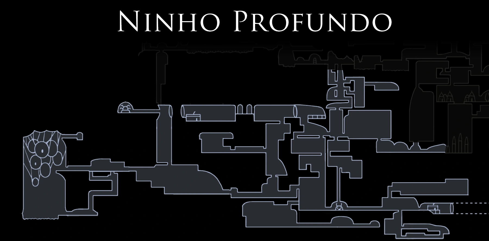

Ninho Profundo
Descrição
O que mais identifica o Ninho Profundo é seu ambiente sombrio. Camadas grossas de teia que cobrem, às vezes, grandes porções do fundo e túneis e passagens retorcidas em forma de labirinto, muitas delas com o brilho fraco de um fungo bioluminescente como única fonte de luz. A maioria das partes do Ninho Profundo é escura ou totalmente preta e pode ser iluminada com a Lanterna de Lumélula Ninho Profundo geralmente se encontra em um estágio muito primário de desenvolvimento, sem o nível geral de arquitetura visto no restante de Hallownest. As partes mais desenvolvidas de Ninho Profundo estão localizadas em sua porção oeste. Algumas estruturas encontradas nessa área têm grande influência externa proveniente das Tecelãs e do reino de Hallownest, como o Covil das Tecelãs, as estátuas das Tecelãs, a Linha de Bonde Inacabada e a Estação de Besouro. As únicas estruturas que não se enquadram nessa categoria são as casas de teia suspensas encontradas na Aldeia Distante e seus interiores. A parte leste do Ninho Profundo é composta essencialmente de passagens escuras e redes complexas de túneis escavados por seus habitantes.
História
Ninho Profundo era ocupado por dois grupos de aracnídeos inteligentes, a Tribo das Aranhas, que costumava ser uma das espécies mais inteligentes da terra de Hallownest, e as Tecelãs, uma tribo de forasteiros que estabeleceu sua própria história e cultura no Ninho Profundo. Ambos os grupos viviam sob o domínio de sua rainha, Herrah a Besta, e de um pai desconhecido, que era de um castelo honrado. Eles governavam da Aldeia Distante, onde ficava o Covil de Herrah. O Ninho Profundo estava frequentemente em conflito com a Tribo Louva-a-Deus e o Clã dos Cogumelos dos Ermos Fúngicos. Quando o Rei Pálido começou a estabelecer seu reino, a Aldeia Distante e as criaturas do Ninho Profundo recusaram completamente seu governo. Seus esforços de expansão foram recebidos com uma resistência furiosa. Não foi possível estabelecer um bonde no Ninho Profundo porque as bestas atacaram os trabalhadores. O Pai do Ninho Profundo morreu em um determinado momento, deixando Herrah como a única governante do Ninho Profundo. Como ela era apenas de descendência comum, fez um acordo com o Rei Pálido para ter um filho com ele. Em troca, ela se tornaria uma Sonhadora para salvar Hallownest da Infecção. Quando a criança, Hornet, nasceu, Herrah adormeceu pouco tempo depois, deixando Ninho Profundo sem um governante formal. O Ninho Profundo acabou sendo dominado pela infecção, sua ninhada foi infectada e as Tecelãs fugiram para seu antigo lar.
Dados
- Dificuldade Difícil
- Variedade de inimigos15
- Fonte:
- Visitar